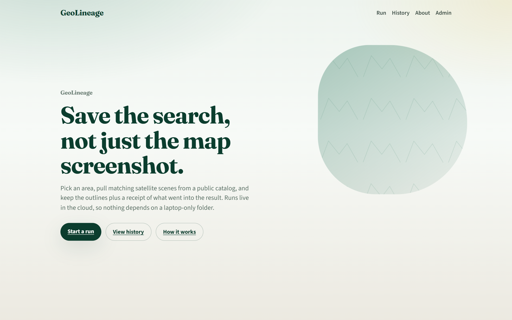
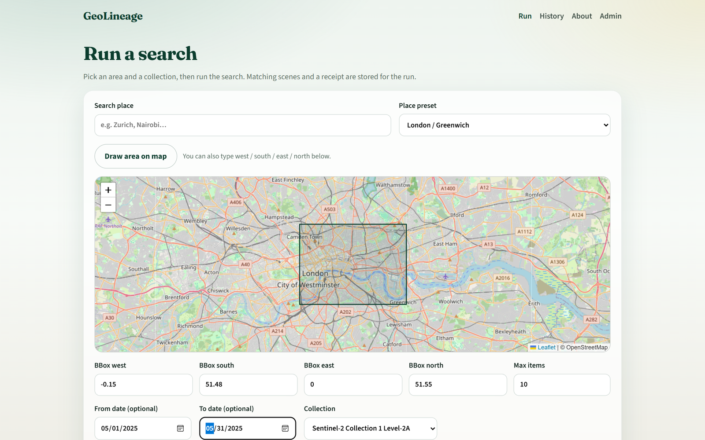
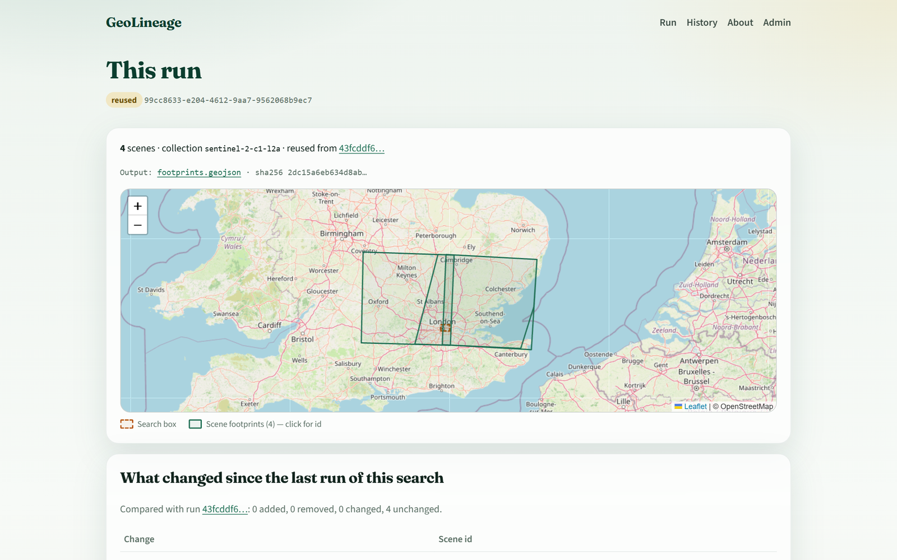
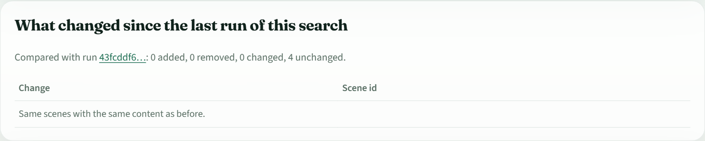
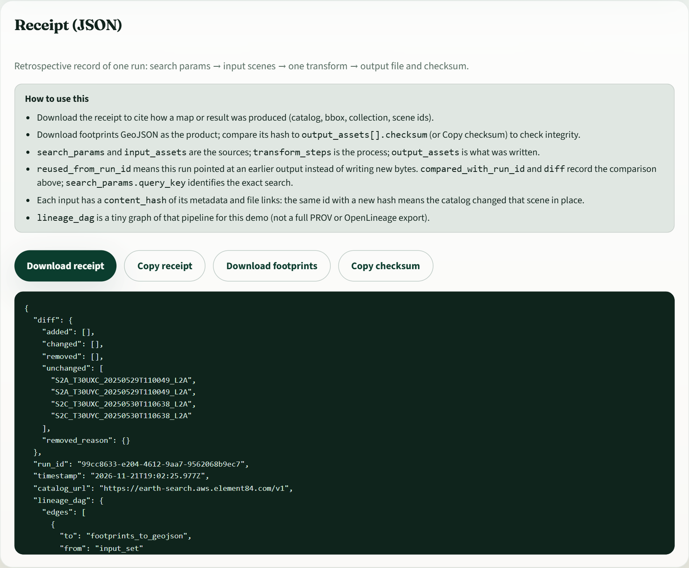
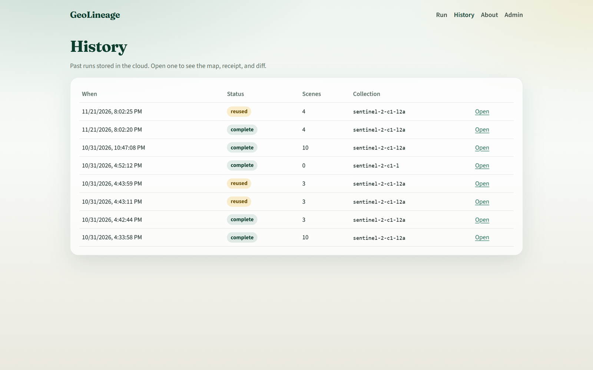
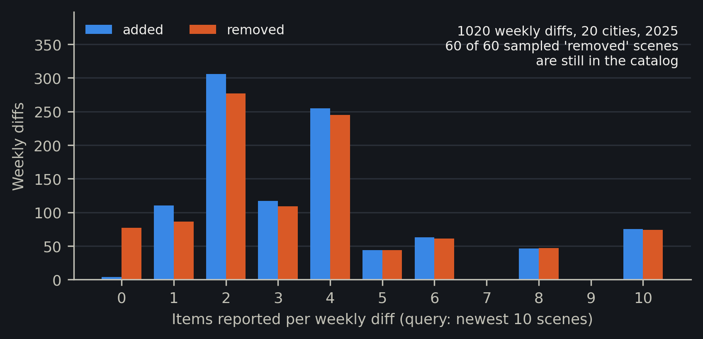
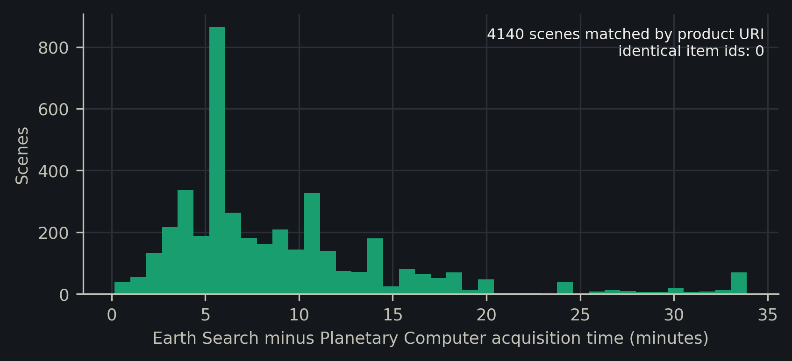
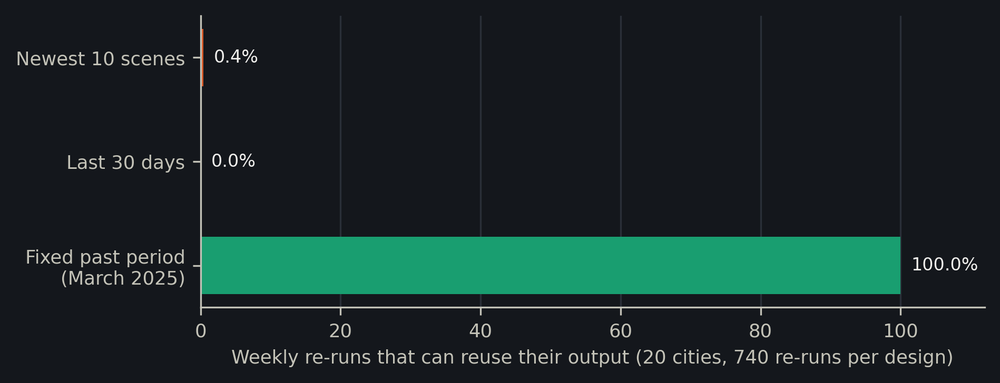

GeoLineage
Provenance for STAC-driven geospatial pipelines: a lineage receipt per run, a diff against the previous run of the same query with a reason for every change, and reuse of unchanged outputs — tested on 8,320 Sentinel-2 items from two public catalogs.
Overview
What this project does
GeoLineage records what a STAC search used and what it wrote: every run produces a JSON receipt with the normalised query, each input scene with a content hash, the transform and the output checksum. A run is compared only with the previous run of exactly the same query (a hashed query key), changes are classified as added, removed or changed in place, removed scenes are labelled as "outside the window" or "gone", and an unchanged input set reuses the previous output before any work is done.
The same contract runs in a Python reference pipeline (GeoParquet) and a hosted demo on Cloudflare and Supabase (GeoJSON); shared test vectors check that both compute identical keys.
Research questions
What I set out to answer
- Which identity rules let a per-run receipt answer "what produced this output" and "what changed since the last run" without a lineage service?
- How stable are STAC query results, and what do naive diffs of a scheduled pipeline report?
- How often do items change in place, and can the same scene be identified across catalogs?
- How much work does reuse of unchanged outputs save under realistic query designs?
Key findings
What the study showed
- A weekly "newest 10 scenes" pipeline reported removals in 92% of 1,020 diffs, yet 60 of 60 sampled "removed" scenes were still in the catalog — they had only fallen out of the window.
- Item ids never matched across Earth Search and Planetary Computer (0 of 4,140 scenes) and acquisition times differed by up to 34 minutes; the Sentinel-2 product URI matched 99.4%.
- Reuse saved work in 0.4% of "newest 10" re-runs but 100% for a fixed past period; catalog default orders differ, so the sort order belongs in the query key; in-place updates were rare (0.4%).
Application
Screenshots
From the live hosted app and the study. Click any image to zoom in.








